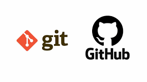
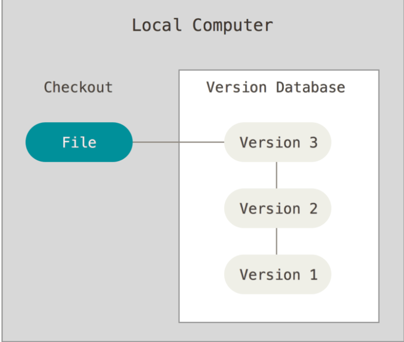
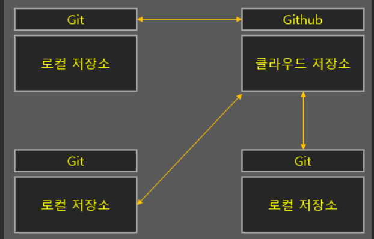

버전관리 시스템이란
코드를 작성하고 수정할 때 마다 버전을 관리하기 위하여 디렉토리로 파일을 복사하는 방법을 사용할 수 있다.하지만 이 방법은 너무나 잘못되기 쉽다. 작업하던 디렉토리를 지워버리거나, 실수로 파일을 잘못 고칠 수도 있고, 잘못 복사할수도 있다.
이런 문제점 해결을 위해 깃을 사용하며 커밋을 수행 할 때마다 깃이 로그를 생성해주어 어떤 부분이 수정되었는지 쉽게 볼 수 있고 특정 로그를 선택하여 그 시점으로 돌아 갈 수 있다.
요약: 코드가 변경된 부분을 내가 기록할 필요 없이 버전 관리 시스템인 깃이 대신 기록해줌

깃과 깃허브의 차이는?
Git: 로컬에서 버전 관리 시스템을 운영
GitHub: 깃허브 클라우드 서버에서 버전 관리 시스템을 운영(원격저장소)

협업으로 프로젝트를 진행한다면 코드의 공유를 위해 깃허브의 사용은 필수적이며 개인적인 프로젝트를 진행한다면 깃허브의 사용이 필수적이지는 않으나 불의의 사고로 인해 본인 컴퓨터가 야옹이별로 가버리면 프로젝트를 처음부터 시작하게 되는 슬픈 상황이 벌어질 수 있으므로 왠만하면 깃허브에도 저장을 해두도록 하자